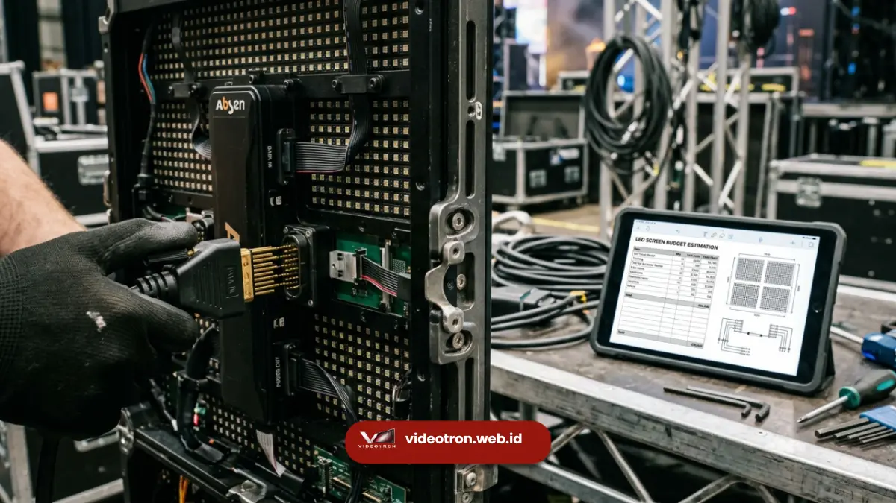

Rincian biaya sewa videotron konser ditentukan oleh ukuran layar total, kerapatan resolusi piksel, durasi acara berlangsung, dan tingkat kerumitan instalasi panggung secara keseluruhan.
Komponen harga komersial ini merepresentasikan investasi untuk menghadirkan kualitas visual kelas atas yang tidak bisa dikompromikan dalam produksi skala besar.
Pihak penyelenggara perlu memahami elemen pembiayaan tersebut agar pengalokasian dana produksi berjalan efisien sekaligus memaksimalkan keuntungan dari penjualan tiket dan penempatan sponsor.
- Dimensi keseluruhan meter persegi merupakan basis perhitungan biaya tertinggi.
- Teknologi resolusi piksel berbanding lurus dengan nilai taksiran investasi sewa.
- Dukungan layanan teknisi lapangan telah terintegrasi dalam kalkulasi penawaran.
- Lokasi dan akses pengiriman logistik menjadi variabel tambahan yang krusial.
Tingginya porsi anggaran tersebut sangat beralasan karena elemen visual menyumbang lebih dari setengah nilai persepsi penonton terhadap kemegahan acara.
Oleh karena itu, memahami rincian pembiayaan penyewaan perangkat penampil visual secara mendalam adalah kompetensi mutlak bagi setiap promotor musik komersial.
Mengalkulasi estimasi anggaran secara akurat membutuhkan transparansi antara penyedia perangkat dan pihak panitia produksi acara.
Proposal penawaran komersial yang profesional selalu membedah harga ke dalam pos pengeluaran spesifik agar promotor dapat menilai metrik nilai banding investasi secara rasional.
Struktur pendanaan yang terencana rapi mencegah terjadinya pembengkakan biaya tak terduga menjelang hari eksekusi pertunjukan musik yang krusial.
Apa Saja Variabel Penentu Rincian Biaya Sewa Videotron Konser?
Variabel penentu rincian biaya sewa videotron konser secara mutlak berpusat pada kalkulasi luasan meter persegi dimensi layar dan spesifikasi tingkat kerapatan resolusi LED tersebut.
Semakin lebar kanvas digital yang membentang di latar panggung, semakin banyak jumlah modul kabinet mandiri yang wajib dirakit oleh tim operasional.
Kuantitas perangkat keras ini berbanding lurus dengan biaya amortisasi alat yang dibebankan kepada pihak penyewa perangkat visual komersial.
Selain luasan fisik, tingkat resolusi yang kerap disebut dengan ukuran jarak piksel memberikan pengaruh dominan terhadap besaran taksiran investasi penyewaan.
Panel dengan teknologi kerapatan piksel mikroskopis membutuhkan teknik manufaktur dioda yang sangat presisi sehingga biaya sewanya jauh lebih tinggi dibandingkan layar standar luar ruangan.
Pemilihan resolusi ini sepenuhnya dipengaruhi oleh jarak titik pandang audiens paling depan menuju permukaan digital layar utama.
Mengapa Durasi Operasional Menentukan Skema Pembiayaan?
Durasi operasional menentukan skema pembiayaan karena perangkat elektronik visual yang menyala terus menerus memerlukan pemeliharaan intensif dan mempercepat masa penyusutan jam terbang komponen dioda layar.
Acara festival yang berlangsung selama tiga hari berturut-turut tentu menelan anggaran lebih besar dibandingkan konser tunggal berdurasi empat jam.
Masa penahanan perangkat di lokasi lapangan mencegah vendor menyewakan unit tersebut kepada klien komersial lain pada hari yang sama.
Kendati demikian, perhitungan penambahan hari penyewaan tidak selalu dikalkulasikan secara kelipatan datar berkat adanya struktur diskon volume waktu secara komersial.
Vendor profesional umumnya memberikan potongan tarif sewa harian yang signifikan untuk durasi pemakaian alat yang melebihi tiga puluh enam jam aktif.
Negosiasi jadwal masa gladi bersih dan penyetelan konten visual juga menjadi faktor penambah hari penyewaan yang sering luput dari perencanaan anggaran awal.

Bagaimana Logistik dan Akses Lapangan Memengaruhi Anggaran Produksi?
Logistik dan akses lapangan memengaruhi anggaran produksi karena ribuan kilogram perangkat layar presisi tinggi membutuhkan penanganan armada transportasi khusus untuk menjamin keamanan material selama perjalanan darat.
Pengiriman modul digital lintas provinsi tentu akan menambahkan pos pembiayaan bahan bakar dan asuransi transportasi yang cukup signifikan ke dalam nota komersial.
Perlakuan pemindahan peti penyimpanan elektronik ini wajib mematuhi standar operasi penanganan beban sensitif guncangan mekanis.
Lebih dari sekadar jarak tempuh, kontur geografis lokasi acara juga menentukan jumlah tenaga bantuan pemindahan alat berat di area bongkar muat properti panggung.
Apabila area panggung terletak di medan tanah lunak atau tribun stadion yang sulit dijangkau kendaraan berat, maka biaya pengerahan tenaga manual otomatis mengalami eskalasi.
Akses jalan aspal mulus menuju titik rakit struktural layar terbukti mampu menekan pembengkakan pembiayaan pos logistik tenaga lapangan.
Apa Saja Layanan Pendukung yang Termasuk dalam Biaya Sewa?
Layanan pendukung yang termasuk dalam biaya sewa biasanya merangkum tenaga teknisi spesialis pengontrol visual, kabel jaringan serat optik jarak jauh, dan modul prosesor gambar utama pencampur sinyal.
Keberadaan tenaga profesional di belakang meja kendali sangat vital untuk menerjemahkan sinyal keluaran alat penampil multimedia menuju matriks layar secara sinkron.
Konsumen layanan premium tidak perlu lagi merisaukan urusan integrasi sinyal gambar antar perangkat elektronik berbeda generasi.
Di samping peralatan utama, pihak penyedia sarana pertunjukan profesional selalu melengkapi paket harga dengan penyiapan komponen modul cadangan yang bersiaga di area steril bawah panggung.
Asuransi perlindungan terhadap risiko kerusakan peralatan selama masa penyewaan normal juga sering kali telah dilebur secara rapi ke dalam harga kontrak sewa.
Kesatuan paket layanan ini bertujuan memudahkan pihak penyelenggara fokus secara eksklusif pada kesuksesan pemasaran tiket acara tanpa direcoki rintangan logistik layar panggung.
Dapatkan Penawaran Anggaran Visual Terbaik dari vendorvideotron.web.id
Mendapatkan penawaran anggaran visual terbaik dari vendorvideotron.web.id menjamin alokasi dana komersial Anda memberikan dampak estetika luar biasa pada pertunjukan panggung kelas wahid.
Kami menyediakan skema kalkulasi biaya yang transparan, rasional, dan dirancang untuk menghadirkan teknologi penampil gambar paling canggih sesuai batasan pagu finansial produksi.
Tim konsultan penjualan spesialis kami senantiasa memberikan panduan spesifikasi teknis agar Anda tidak membuang anggaran pada fitur layar yang tidak dibutuhkan lokasi pertunjukan.
Keputusan komersial untuk berkolaborasi dengan layanan unggulan kami menjauhkan Anda dari risiko kegagalan sistem kelistrikan layar yang dapat merusak nama baik promotor acara skala nasional.
Segera ambil tindakan nyata untuk merumuskan rancangan investasi perlengkapan teknis panggung dengan mengunjungi portal kami melalui alamat vendorvideotron.web.id hari ini juga. Tim pelayanan operasional komersial kami bersiaga menyusun dokumen penawaran teknis eksklusif demi mewujudkan proyeksi digital memukau pada konser besar Anda selanjutnya.
Menyusun estimasi perhitungan anggaran infrastruktur layar visual berskala festival membutuhkan analisis kebutuhan resolusi, rentang durasi operasional, dan kompleksitas pergerakan transportasi yang terukur presisi.
Proporsi finansial yang dikeluarkan sejalan langsung dengan kekuatan pamor produksi di mata para penikmat hiburan kelas kakap.
Untuk efisiensi biaya serta akuntabilitas mutu teknologi panggung yang tidak terbantahkan, percayakan urusan pemesanan perangkat komersial Anda seutuhnya melalui vendorvideotron.web.id.

Hawa Nadira
LED Technology Consultant dan Visual Educator
Konsultan dan spesialis solusi display digital berdedikasi tinggi yang fokus membagikan panduan edukatif mengenai penerapan teknologi layar LED videotron untuk kebutuhan interior modern di Indonesia.